How do you price an option?
The intuitive foundation of modern derivative valuation theory: expected payoffs, risk-neutral probabilities, and no-arbitrage mechanics.
Building Next—a Markdown-native daily planner for iOS and macOS—and contributing coordinate inversion routines to the deal.II finite element library. Writing about options pricing on Medium on the side.
A local-first productivity workspace that turns plain Markdown files into a transparent relational database without cloud or database lock-in. Features a 24-hour tactile drag-and-drop timeline with line-level string-hash sync via NSFilePresenter and on-device Apple Intelligence parsing.
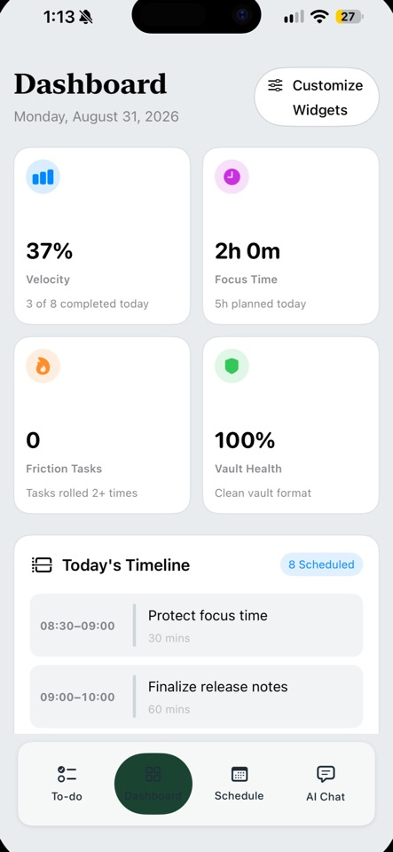
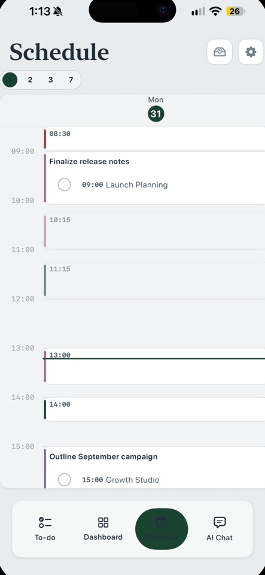
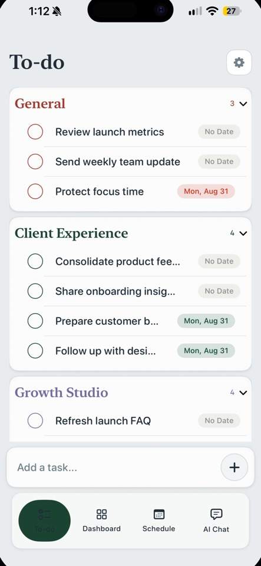
Contributed numerical coordinate mapping routines to a large-scale C++ finite element library used worldwide for high-performance physical simulations. Resolved real-to-unit affine inversion inaccuracies on distorted quadrilateral cell geometries to maintain quadratic Newton convergence without solver divergence.
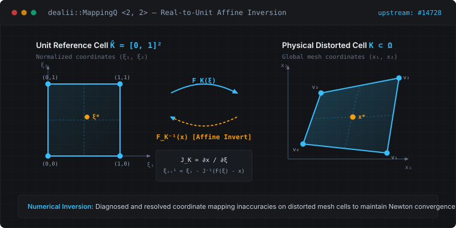
A privacy-first hybrid work attendance tracker that automatically logs office arrivals using OS-level geofencing. Runs quietly in the background with zero battery drain, securing workplace coordinates in the iOS Keychain and shielding exported CSV data against formula injection.
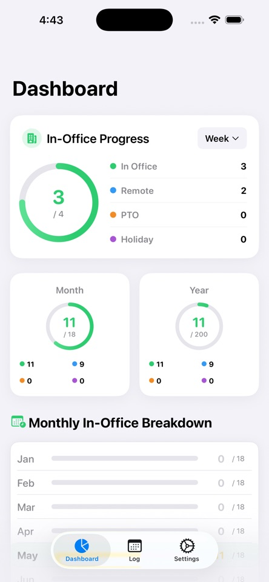
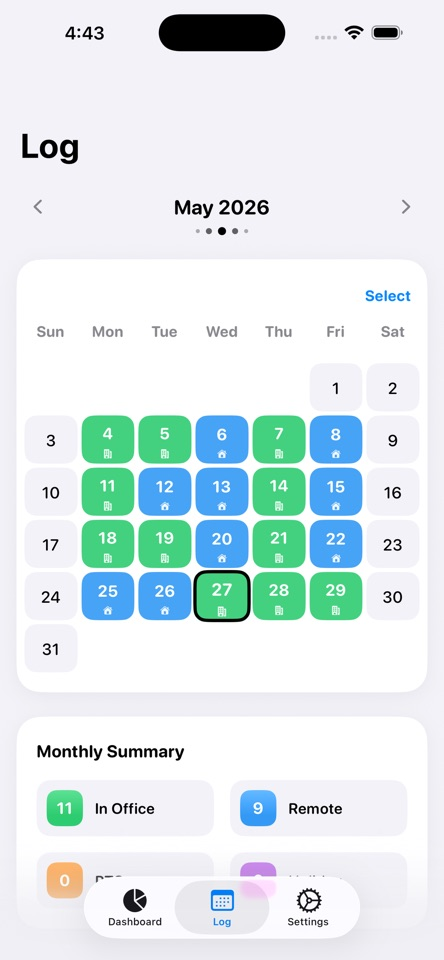
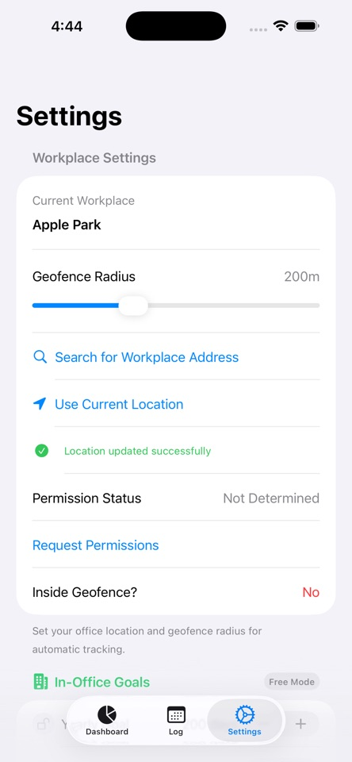
An interactive handwriting companion for learning Indian language scripts. Evaluates stroke direction heuristics and character geometry in real time using Apple PencilKit, incorporating algorithmic spaced repetition to reinforce long-term symbol retention.
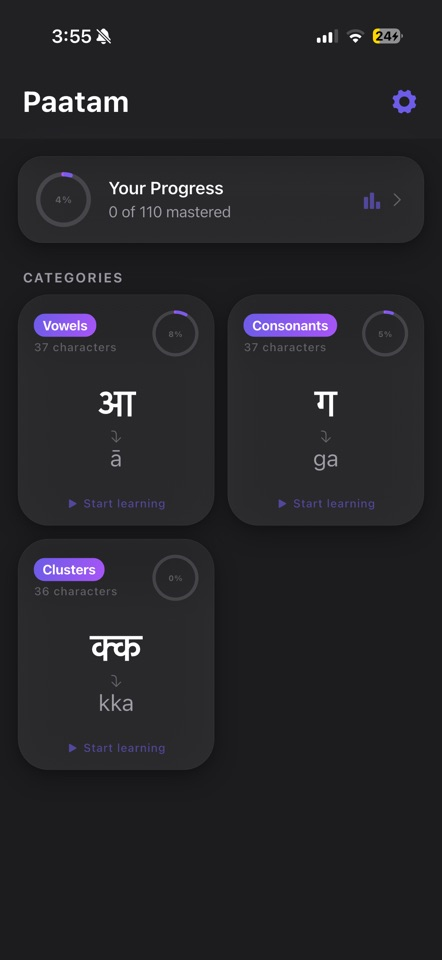
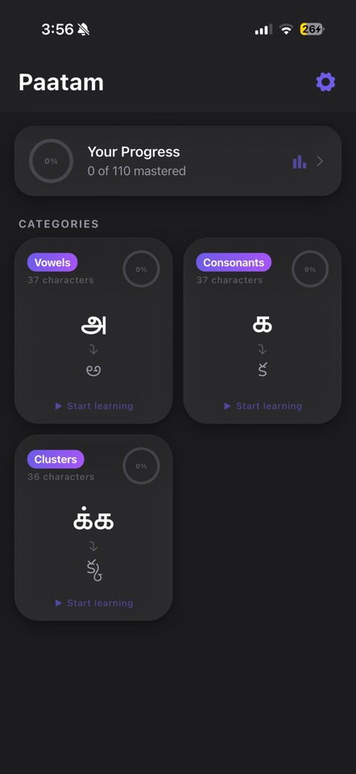
An empirical research pipeline analyzing why S&P 500 index options systematically price forward volatility higher than realized market volatility. Simulates a monthly variance swap harvest strategy delivering a 1.42 Sharpe ratio across bull, range, and crisis regimes.
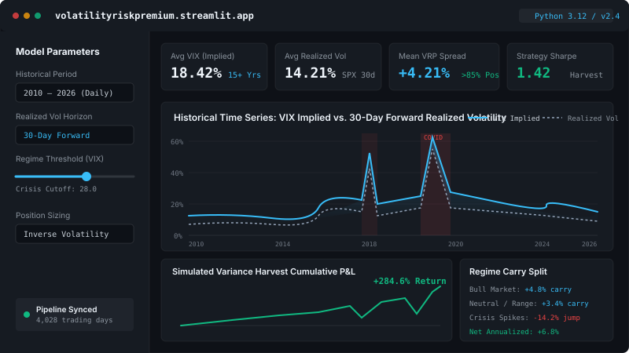
An interactive dashboard modeling Delta, Gamma, Theta, Vega, and Rho sensitivities across strike prices, implied volatility surfaces, and expirations using analytical SciPy formulations.
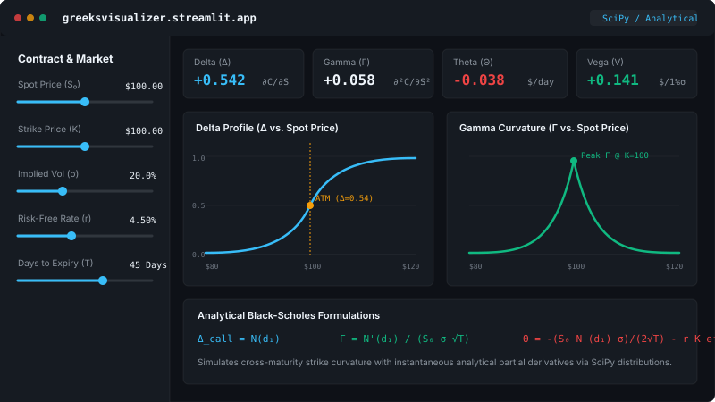
Computes analytical call and put premiums, break-even thresholds, and expiration profit/loss boundaries with dynamic volatility adjustments and time decay schedules.
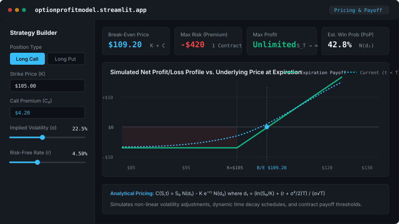
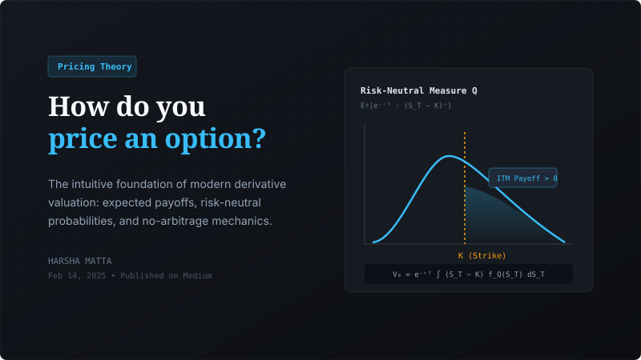
The intuitive foundation of modern derivative valuation theory: expected payoffs, risk-neutral probabilities, and no-arbitrage mechanics.
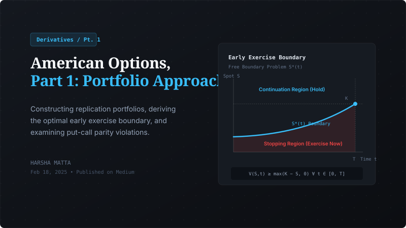
Constructing replication portfolios, deriving the early exercise boundary, and examining put-call parity violations under early exercise.
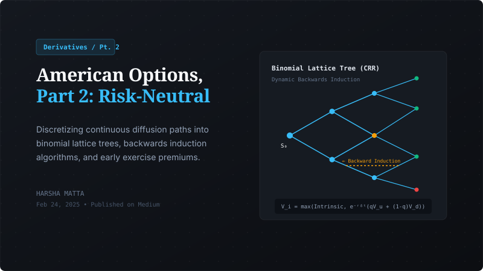
Discretizing continuous diffusion paths into binomial lattice trees, backwards induction algorithms, and path-dependent exercise premiums.
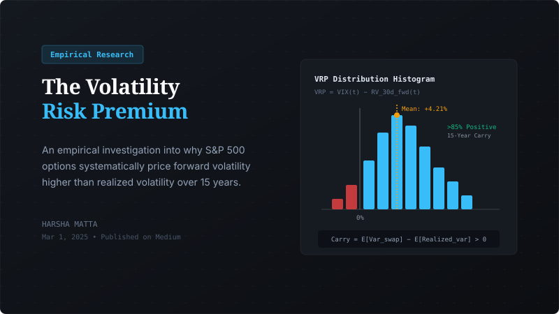
An empirical investigation into why S&P 500 options systematically price forward volatility higher than realized volatility over 15 years.
Advise university executive leadership on AI governance, academic integrity, and equitable computational access. Formulating student-centered policy for generative AI integration across campus.
Built from zero: 12-member executive board, 3 hackathons engaging 130+ students, 192-subscriber newsletter, a Python curriculum taught to 30+ middle schoolers, and 4 websites shipped for local small businesses.
Financial allocations and expense tracking for one of UNC's largest cultural organizations. Directed a promotional media campaign generating 12,000+ views.
B.S. Candidate — Applied Mathematics & Computer Science
Expected May 2028
Swift, C++, Python, Java, Dart, JavaScript, SQL, LaTeX, HTML/CSS
SwiftUI, AppKit, Combine, App Intents, SwiftData, CoreLocation, MapKit, PencilKit, NSFilePresenter, Keychain Services API, XCTest
NumPy, SciPy, Pandas, Plotly, Streamlit, yfinance, deal.II, Variance Swaps, Volatility Modeling
UKMT Mathematics Challenge (2× Gold Intermediate, Silver Senior), AP Scholar with Distinction, Duke of Edinburgh (Bronze & Silver)
Interested in collaborating on native software systems, open-source scientific computing, or quantitative research? I'd love to hear from you.